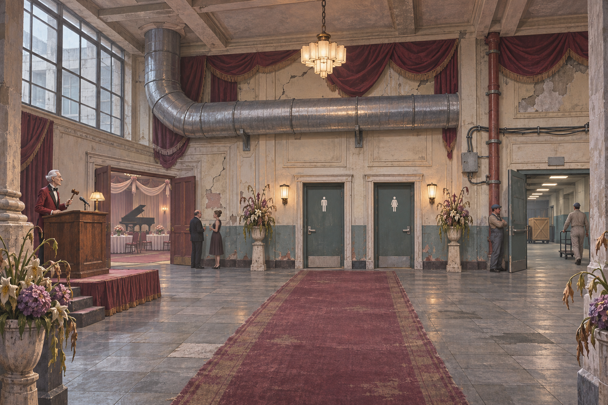

Chapter 4 · v04 rendering review
CH4-01 / CH4-02 / CH4-03 · UNSELECTED · November 22, 2026
v03 environmental lighting is retained selectively while meaningful material/construction detail is restored. Latest owner steering: the auctioneer now faces forward with natural proportions and a restrained expression, using approved human NPC detail and palette benchmarks. Review at 1× first. The approved artwork is a comparison target; passing file checks does not establish equivalent craft.
Manifest / hashes · Per-asset assessment · Owner direction · Verbatim storyboard requirements · Native authorship / image QA · Browser QA
CH4-01 · Grand Bellevue Lobby
v03 lighting/composition retained, with chipped/stained plaster, localized slab cracks and worn tile corners, interrupted carpet nap, directional podium grain/dents, folded velvet seams, petal/urn clusters and fastened duct joints. Floor/window/ceiling long edges now share VP (182,112); podium long edges are corrected. Tiny NPCs remain simple.
Review limitation: The native room is still an economical stylized reconstruction. Aging and flower clusters are visible but less natural than the strongest approved Chapter 2 art. Perspective corrections are an illustration audit, not a full building model.
v03 — preserved · 314×206v04 — unselected · 314×206v02 — preserved · 314×206 Approved Bureau · native comparison
Direct v02/v03/v04 comparison PNG · Native PNG · 4× PNG · Editable native source · Reconstruction brief
SHA-256 4c7d3e004894c9ae7787cf66c6de8ca7ccafeb74a8310743b6ed05daffb7c3f3
Preserved v01 candidate
Original detailed concept reference — unchanged

Study reference; not the authored native source.
CH4-02 · Auctioneer Lobby Portrait Background
Same close hotel camera and warm practical-light hierarchy; illustrated cloth crests/troughs, loaded seams, broken fringe, plaster loss, trim mitres/splices, metal fasteners/tarnish, lamp joints and grain/dents replace smooth fabric gradients.
Review limitation: The close background remains simplified compared with the detailed concept. Lamp-lit planes are deliberately grouped and can still look graphic; owner should judge surface richness beside the approved receptionist background.
v03 — preserved · 564×278v04 — unselected · 564×278v02 — preserved · 564×278 Approved Reception background · native comparison
Direct v02/v03/v04 comparison PNG · Native PNG · 4× PNG · Editable native source · Reconstruction brief
SHA-256 2e69bd29653344e1fe55ae5fc34977f7f457092364df1913eccc90c029dd3543
Preserved v01 candidate
Original detailed concept reference — unchanged

Study reference; not the authored native source.
CH4-03 · Auctioneer — Front-facing older man
Latest owner steering supersedes the old exaggerated profile: a front-facing ordinary older man, direct gaze, restrained dry expression, natural nose/ears, silver hair, burgundy formalwear and low-held gavel. Explicit skin/hair/cloth ramps restore wrinkles, eyes, fingers, seams, satin and shirt construction. Approved receptionist/attendant/presenter guide human style, detail and compatible palette.
Review limitation: This is a proposed new frontal identity, not an approved model sheet. It remains stylized: face/hair anatomy, apparent age, expression and gavel grip require owner review against the approved human NPCs. No claim that their minimum standard has been met.
v03 — preserved · 564×278v04 — unselected · 564×278v02 — preserved · 564×278 Approved Receptionist foreground · native comparison
Direct v02/v03/v04 comparison PNG · Native PNG · 4× PNG · Editable native source · Reconstruction brief
SHA-256 6e7d6eb3f2d74b98f9fd34a48fa9be9cb5c8f67567c868a71508c155d64dc46a
Preserved v01 candidate
Original detailed concept reference — unchanged

Study reference; not the authored native source.
Earlier profile concept — preserved, superseded by frontal direction
Show the unchanged original detailed profile reference

Canonical approved-art comparisons
Bureau and Control Tower set the scene benchmark. Receptionist background and foreground set the close-up finish target. All benchmark PNGs are byte-unchanged; none was regenerated.
Bureau · native and exact 4×
Control Tower · native and exact 4×
Reception scene · native and exact 4×
Reception background · native and exact 4×
Receptionist foreground · native and exact 4×
Pavilion attendant · native and exact 4×
Pavilion presenter · native and exact 4×
| Axis | v04 assessment |
|---|
| Logical dimensions | 314x206 scene and separately authored 564x278 opaque/transparent portrait layers. Portrait head/body scale is compared with actual approved human NPCs. |
| Meaningful detail | Restore material construction and localized wear: slab edges, carpet nap, grain, plaster/lath loss, stitched cloth, joints, petals and container rims. Portrait features, hands and tailoring are explicitly drawn. |
| Silhouettes and identity | Scene NPCs stay tiny/simple. The portrait is front-facing per latest owner direction: normal nose/ears, quiet old-coot expression, silver hair, burgundy jacket and low gavel; old profile is superseded. |
| Coherent ramps and palette | Explicit portrait skin, silver hair, charcoal/satin, ivory and muted burgundy ramps align with approved receptionist/attendant/presenter. No global palette limit or mass reduction; compare actual style/finish at 1x. |
| Perspective and construction | Unified lobby VP (182,112), floor clipping at wall boundary, corrected converging window/ceiling long lines and podium edges. Separate wear clusters follow slab planes and real joints. See perspective-audit.json. |
| Lighting and visibility | Retain v03 warm lamps/cooler window fill/deep recesses selectively. Wall and fabric shapes are painted as grouped planes and folds; avoid smooth mathematical fabric gradients and broad periodic texture noise. |
| Anatomy, hands and fabric | Front-facing eyes, age folds, modest moustache, directional hair locks, fingers wrapping the low gavel, differentiated shirt/satin/cloth and stitched seams. Artistically unselected; approved receptionist remains the minimum target. |
| Native and exact 4x comparison | Each asset has v02/v03/v04 native rows and exact 4x views; unchanged original concepts, v01, Chapter 2 rooms and approved human portraits are shown. Exact exports and native authorship do not establish aesthetic quality. |
No declaration of artistic acceptance is made. The frontal portrait and illustrated material finish still require owner selection. Earlier versions remain byte-unchanged. Nate selects the standard before any restroom/ballroom revision.